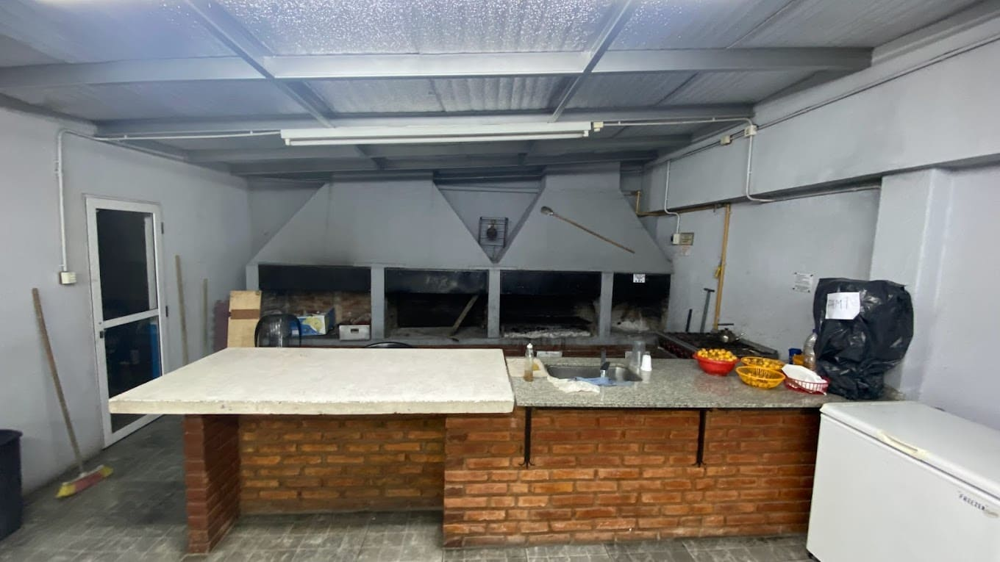
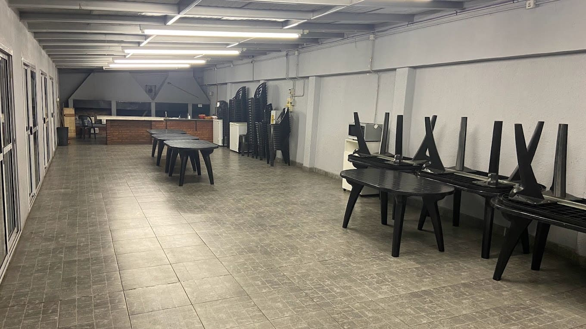

NUESTRA HISTORIA
El Club José Hernández tiene sus raíces en la fundación del Club
Social Porteño el 17 de agosto de 1924, inicialmente centrado en
actividades sociales y de esparcimiento. En 1938, la fusión con la
Asociación de Fomento y Cultura José E. Rodó dio origen a la
Asociación de Fomento Edilicio, Cultural y Deportivo José Hernández.
La sede se trasladó a Bragado 5950 en 1942.La institución experimentó
un crecimiento significativo, convirtiéndose en un centro polifacético
con biblioteca, salones de cursos, gimnasio de básquet, canchas de
bochas, y actividades culturales como teatro y cine. En 1944, el club
adoptó el nombre actual en homenaje a José Hernández, autor del poema
"Martín Fierro". En 1958, se materializó la adquisición de una sede
propia y en 1966, bajo la presidencia de Alberto Millán, se presentó
un ambicioso plan de expansión que incluyó la construcción de un
natatorio. El proyecto se llevó a cabo en 1978, inaugurando nuevas
instalaciones con piscinas, solarium, canchas deportivas y más. En las
décadas posteriores, el club continuó su desarrollo, incorporando
nuevos deportes, cursos y adquiriendo propiedades adicionales. Se
realizaron mejoras y ampliaciones, como la construcción de un
microestadio en 1985 y la remodelación del sector de natatorio en
1997.
Durante toda su historia el club sorteó distintos escenarios y
desafíos económicos pero sin dudas la pandemia del COVID 2020 fue la
más dura. El club cerró y se abría unicamente los domingos para
realizar una "olla popular" organizada por un grupo de socios y socias
de la institución apoyados y avalados por la Comisión Directiva. En
ese momento la presidenta actual, Mariel Guillen, publicó una agónica
carta relatando el presente del club que no tardaria en llegar a los
medios y hacer eco en otros clubes de barrio. Gracias a que esa carta
se viralizo y al apoyo tanto de empleados como socios, el club
nuevamente salió adelante.
Actualmente el club se encuentra con
grandes planes estructurales, cuenta con mas de 3000 socios y socias
activos, mas de 15 actividades y en camino a su centenario.
EL QUINCHO
Contamos con un quincho que se alquila para eventos de hasta 30 personas tanto para socios como para no socios. Para mayor informacion comunicarse al mail de la secretaría (asocjosehernandez@hotmail.com) ó acercarse a la misma.
 LA BIBLIOTECA
Además de las actividades del club, Jose Hernandez cuenta con la Biblioteca Popular 'Eurindia'. La Biblioteca depende y esta protegida por C.O.N.A.B.I.P. (Comisión Nacional de Proteccion a las bibliotecas populares) que anualmente nos provee de libros para engrosar y actualizar nuestro patrimonio, además de los importantes subsidios para cubrir las necesidades edilicias, mobiliarios etc. cuyos importes se rinden periódicamente con las facturas correspondientes de los gastos efectuados. También nos subsidia anualmente para la compra de libros en la Feria Anual del Libro. Un comentario aparte merece el rinconcito de los niños con excelente literatura para todas las edades, cuentos, leyendas, enseñanzas, etc. Los préstamos, tanto para socios como para publico en general, se realizan a partir de las 18.30 hs. hasta las 21 hs. de Lunes a Viernes y por el témino de 15 días.